Gördülékenyebb folyamatok
Az ötleteid gyors megvalósítása, átlátható lépésekkel.


Értékeink
Felejtsd el a lassú, átláthatatlan rendszert. Építsünk egy gyorsan reagáló, diák‑központú közösséget.

Miért építem ezt?
„Egy évig figyeltem, ahogy a legjobb diákötletek is elvesznek az átláthatatlan bürokrácia süllyesztőjében. Ha egy rendszer lassú és ennek következtében nem a diákokat szolgálja, akkor azon javítani kell. Nem ígérgetni akarok, hanem egy gyors, működő rendszert építeni.”
*: DTP: Diák Tanár Program
01
2026. április 15‑én 8:00–14:00 között várunk az iskolai Aulában.
02
Hozd magaddal az érvényes diákigazolványod, és keresd a Diák Szövetség pultját.
03
Válaszd azt a csapatot, akiben tényleg bízol – a szavazatod számít.
Teamsen keresd Turóczi Ádámot, vagy keresd fel a www.eu2khub.eu/vote#dsz-connect oldalt.